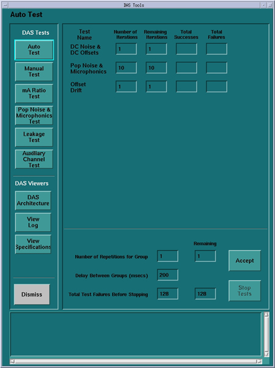

Operating Documentation
Direction 5193575-800, Rev# 5
LightSpeed 7.X Service Information - Adv
Operating Documentation |
The difference between auto test and manual test is that the auto test feature runs a default number of iterations of each of the sub-tests, while the manual mode allows the user to specifically select a sub-test(s) and the number of iterations for that selection of test(s). Some tests may not be run by the Auto test. This document will define those differences.
Illustration 1: Example Auto Test / Manual Test Screen

The following tests are executed during auto test:
This test collects DAS data with zero input current (no x-ray) and the mean value of each output channel is compared to spec. Also, the standard deviation is measured against a noise spec. There is only a single DAS gain for 32 and 64 slice systems so only a single scan is necessary. Refer to Table 1
A Structured Noise test has been introduced that will look for structured noise patterns rather than just a noise level change. This test performs another analysis on the same data collected for DC noise and offsets.
Depending on failed pattern, based on DAS/Detector architecture, the fault may be a board, connector, or power supply.
Table 1: Offset and Noise Scans
| System Type | Scan # | Gantry Rotation | X-Ray | Rotor | Acquisition Mode | Scan Time/VPS | Scan Data Analysis |
|---|---|---|---|---|---|---|---|
| 64 slice | 1 | Stationary 0° | No X-Ray | Off | 64 x 0.625 | 0.4 / 2460 | Raw |
| 32 slice | 1 | Stationary 0° | No X-Ray | Off | 32 X 1.25 | 0.4 / 2460 | Raw |
Pop noise is the maximum of view to view noise differences. Microphonics is the noise or standard deviation during rotation.
This test takes a series of two scans. In the auto-mode, it takes ten iterations of the series. Failure analysis of this test is dependent on test results. Pop/Noise and microphonics issues can be caused by many system related conditions. Some of the most common could be the power supply noise, electrical connections, gantry rotation/mechanical issues, and external influences.
It is highly important to look at patterns relative to DAS/Detector architecture, gantry rotation (azimuth position as well as velocity), and possible vibration (rotor on/off).
Table 2: Microphonic Noise Scans
| System Type | Scan # | Gantry Rotation | X-Ray | Rotor | Acquisition Mode | Scan Time/VPS | Scan Data Analysis |
|---|---|---|---|---|---|---|---|
| 64 slice | 1 | Rotating | No X-Ray | On | 64 x 0.625 | 1 / 984 | Offset |
| 64 slice | 2 | Rotating | No X-Ray | On | 64 X 0.625 | 0.4 / 2460 | Offset |
| 32 slice | 1 | Rotating | No X-Ray | On | 32 X 1.25 | 1 / 984 | Offset |
| 32 slice | 2 | Rotating | No X-Ray | On | 32 X 1.25 | 0.4 / 2460 | Offset |
A series of two data collection scans, over a course of 60 seconds, and the offset means values are analyzed to measure the amount of variance over 60 seconds of scanning. There are two scans taken with a delay of 60 seconds between each scan. The absolute value of the Means are taken and compared. Scan time is 0.4 seconds @ 2460 views/sec
There should be little or no drift between the first scan of each scan mode and the scan taken 60 seconds later. The spec is ±3 counts for each channel across a 60 seconds time.
Table 3: Offset Drift Test
| System Type | SCAN # | SCAN MODE | DESCRIPTION |
|---|---|---|---|
| 64 | 1 | 64 x 0.625 | Initial Offsets scan at specific technique |
| 64 | 2 | 64 x 0.625 | Offset scan after 60 second interscan |
| 32 | 1 | 32 x 1.25 | Initial Offsets scan at specific technique |
| 32 | 2 | 32 x 1.25 | Offset scan after 60 second interscan |
Therefore, from Table 3 above, the difference in counts between scans 1 and 2 must be within 2 counts per channel. Failure analysis of the drift test may be a bad fan or clogged filter in the Fan Plenum. This could also be a bad A/D board in the Detector, but also considerations need to be taken on account of room temperature fluctuations and DAS warm-up time. It may be normal for this test to fail if it is executed immediately after turning on the DAS.
Plateau noise test is intended as a manufacturing test run during detector manufacturing and again in CT manufacturing to make sure there are no manufacturing defects introduced during initial DAS/Detector build and integration. This test is not run during an Auto pass of DAStools and is not intended for field use without specific instructions from Engineering. There is currently no defined field actions for this test.